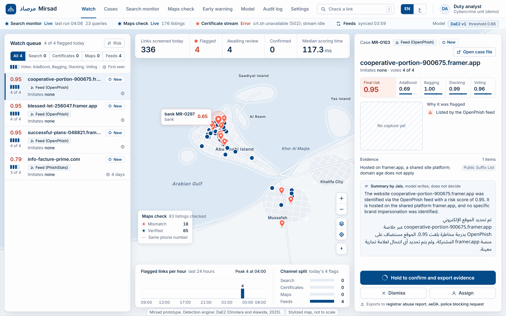
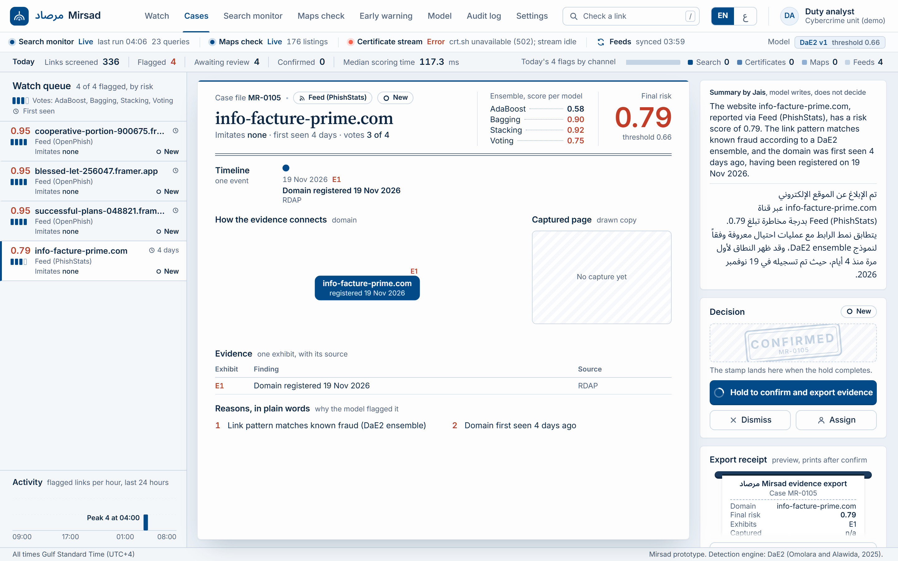

Finding fraudulent links in search results and maps before victims do
TeamMuhammet Yalkapov (lead), Sulaymon Sadullo, and Ahmed Mohamed Almheiri, Abu Dhabi University
Fraud finds people where they search
Abu Dhabi Police warned three times in 2026 that fraudulent sites reach people through search results and paid search ads.
online fraud cases handled by Abu Dhabi Police in the two years to October 2025
AED {{facts.adp_recovered_aed_million_two_years}} million recovered for victims in the same period
Source: {{facts.adp_figures_source}}. The amount is money recovered, not money lost.
Today, protection starts at the moment of contact
The link is placed
A search result, a paid ad, a map listing, or a new domain
A person searches
For a fine, a toll, a parcel, or a bank's support line
A person makes contact
Opens the site or receives a message
A person reports
Usually after the loss
Missing: watching where scammers place their links, early, and turning what is found into evidence.
Mirsad watches upstream
- 01Search results and paid ads for {{app.search_queries}} UAE service queries, in English and Arabic
- 02Map listings around Abu Dhabi: websites and phone numbers that do not fit the business
- 03New certificates that imitate {{app.brands}} UAE brands, often before the link circulates
- 04Public threat feeds for fresh labels
- 05One queue for an analyst, one case file per site, and one evidence package per decision
Running on live data from the event

Live run of {{counts.first_run_gst}}. Median scoring time {{n2:e4.median_ms_single_url}} ms per link on a laptop CPU.
How Mirsad works
- Search results and ads ({{app.search_queries}} UAE service queries, English and Arabic)
- Map listings (Google Places, Abu Dhabi)
- New certificates (lookalikes of {{app.brands}} UAE brands)
- Threat feeds (OpenPhish, URLhaus, PhishStats)
- Domain age (RDAP, first certificate)
- Reputation (URLhaus, VirusTotal)
- Sandbox capture in an isolated VM
- Phishpedia logo match
- Stage 1, DaE2 ensemble on every URL (AdaBoost, Bagging, Stacking, Voting)
- Stage 2, evidence rules that only raise risk
- Official-domain cap
- Plain-language reasons
- Risk-ranked analyst queue
- Case file with numbered exhibits
- Hold to confirm
- Evidence package for a registrar, aeDA, or a police blocking request
The host laptop never loads a suspicious page. Summaries by Jais (or a local Falcon) never decide.
DaE2, reproduced first, then hardened
What it is
DaE2 combines four ensembles (AdaBoost, Bagging, Stacking, and Voting) over character patterns and {{app.lexical_features}} lexical features of the URL. Omolara and Alawida published it in 2025.
Why an ensemble
Fast enough to screen every link on a laptop CPU, explainable through four votes per link, and steadier than any one of its models alone.
What we changed
We reproduced the paper's setting first, then changed only what our data audit showed was wrong: canonical URLs, a split by domain, retraining on 2024 to 2025 data, and a threshold fixed at a 1% false-positive rate.
We tested DaE2 where it is hardest: sites it has never seen
One rule, "malicious if the URL starts with http", already scores {{pct:e0.scheme_only_rule.accuracy}} on the paper's dataset.
Accuracy of the DaE2 mean at a threshold fixed on validation data. Measured by our code; every value is generated from results/*.json.
Beyond the URL: evidence an officer can read
- 01Domain age, from RDAP and the first certificate
- 02A card or password form on the page
- 03A form that posts to another domain
- 04A brand's logo on a domain the brand does not own
- 05A paid ad or top result for a brand query, off the brand's domain
- 06A phone number shared across map listings
Each rule can only raise the risk, and each adds a plain reason, such as "Domain first seen 4 days ago".

If 1% of links are fraudulent, even this model is right on about this share of its flags. The queue therefore ranks cases, and an officer confirms each one.
The subject is websites, not people
Suspicious pages load only in an isolated VM. The host receives a screenshot and the page facts, never the page itself.
- No visitor data, cookies, or form inputs are collected
- Query strings that may carry victim data are stored only as keyed hashes
- Inside the sandbox, private addresses are blocked and no form is ever submitted
- Summaries come from Mirsad's own facts, never the attacker's page text; a local Falcon gives a zero-egress mode
- Every view, decision, and export is written to an append-only audit log
- An officer decides; nothing is blocked automatically
Legal frame: Federal Decree-Law No. 34 of 2021. Articles 11, 15, 40, and 48 describe what Mirsad detects; Articles 1 to 4 and 12 bound how it collects; Articles 62 and 66 are the powers its evidence package serves. Principles of the Personal Data Protection Law are applied by design.
What Mirsad found during the event
| Channel | Screened | Flagged |
|---|---|---|
| Search results and ads | {{int:counts.screened_by_channel.search}} | {{int:counts.flagged_by_channel.search}} |
| Map listings | {{int:counts.screened_by_channel.maps}} | {{int:counts.flagged_by_channel.maps}} |
| New certificates | {{int:counts.screened_by_channel.certificates}} | {{int:counts.flagged_by_channel.certificates}} |
| Threat feeds | {{int:counts.screened_by_channel.feeds}} | {{int:counts.flagged_by_channel.feeds}} |
A flag is a lead, not a verdict. Each flagged site waits in the queue until an officer confirms it or dismisses it.
Live run of {{counts.first_run_gst}}. Counts are generated from results/counts.json.
A 90-day pilot with the Cybercrime unit
Run on the unit's lists
Mirsad runs on the unit's own query list and brand list, and officers label the cases.
Learn from decisions
The second stage learns from officer decisions, and registrar and aeDA abuse channels are connected.
Measure the gain
Time from first certificate to takedown is measured against today's baseline.
A pilot partner in Abu Dhabi Police, and introductions to two UAE banks and the .ae registry.
The team behind Mirsad
Muhammet Yalkapov
Team lead, security and product
- BSc Information Technology, cybersecurity concentration, Abu Dhabi University
- 1st place, UAE Hackathon 2026, on the UAE Cyber Security Council and CyberE71 challenge
- 2nd place, Tatweer Hackathon 2026
- Co-author of a Springer paper (LNNS, ACR'26)
Sulaymon Sadullo
Data and AI
- Electrical Engineering, Abu Dhabi University
- Hardware and software, Python, data science, and AI and machine learning
- 1st place, UAE Hackathon 2026, on the UAE Cyber Security Council and CyberE71 challenge
Ahmed Mohamed Almheiri
Deployment and partnerships
- MSc Cybersecurity, Abu Dhabi University; BSc Cybersecurity Engineering
- Ethical hacking, system and network administration, and network security
- Personal Linux projects; teammate on Masarain (ATP 2026, EDGE track)
Academic mentorDr. Moatsum Alawida, Abu Dhabi University
Detection methodDaE2, Omolara and Alawida, Computers & Security 148 (2025). Open data and services are credited in docs/DATA.md.
Use of AI toolsAnthropic's Claude Code helped with research about datasets and UAE fraud context; implemented the prototype and experiments.
Results in full, test by test
| DaE2 mean, at the validation threshold | Accuracy | Precision | Recall | False-positive rate | ROC AUC | Precision at 1% prevalence |
|---|---|---|---|---|---|---|
| E1a Paper's setting, random split | {{pct:e1a.at_validation_threshold.dae2_mean.accuracy}} | {{pct:e1a.at_validation_threshold.dae2_mean.fraud_class.precision}} | {{pct:e1a.at_validation_threshold.dae2_mean.fraud_class.recall}} | {{pct2:e1a.at_validation_threshold.dae2_mean.false_positive_rate}} | {{n2:e1a.at_validation_threshold.dae2_mean.roc_auc}} | {{pct:e1a.at_validation_threshold.dae2_mean.precision_at_1pct_prevalence}} |
| E1b Source artifacts removed | {{pct:e1b.at_validation_threshold.dae2_mean.accuracy}} | {{pct:e1b.at_validation_threshold.dae2_mean.fraud_class.precision}} | {{pct:e1b.at_validation_threshold.dae2_mean.fraud_class.recall}} | {{pct2:e1b.at_validation_threshold.dae2_mean.false_positive_rate}} | {{n2:e1b.at_validation_threshold.dae2_mean.roc_auc}} | {{pct:e1b.at_validation_threshold.dae2_mean.precision_at_1pct_prevalence}} |
| E2 Split by domain | {{pct:e2o.at_validation_threshold.dae2_mean.accuracy}} | {{pct:e2o.at_validation_threshold.dae2_mean.fraud_class.precision}} | {{pct:e2o.at_validation_threshold.dae2_mean.fraud_class.recall}} | {{pct2:e2o.at_validation_threshold.dae2_mean.false_positive_rate}} | {{n2:e2o.at_validation_threshold.dae2_mean.roc_auc}} | {{pct:e2o.at_validation_threshold.dae2_mean.precision_at_1pct_prevalence}} |
| E3a Deployed model, later months | {{pct:e3a.at_validation_threshold.dae2_mean.accuracy}} | {{pct:e3a.at_validation_threshold.dae2_mean.fraud_class.precision}} | {{pct:e3a.at_validation_threshold.dae2_mean.fraud_class.recall}} | {{pct2:e3a.at_validation_threshold.dae2_mean.false_positive_rate}} | {{n2:e3a.at_validation_threshold.dae2_mean.roc_auc}} | {{pct:e3a.at_validation_threshold.dae2_mean.precision_at_1pct_prevalence}} |
| E3b Paper's model, later months | {{pct:e3b.at_validation_threshold.dae2_mean.accuracy}} | {{pct:e3b.at_validation_threshold.dae2_mean.fraud_class.precision}} | {{pct:e3b.at_validation_threshold.dae2_mean.fraud_class.recall}} | {{pct2:e3b.at_validation_threshold.dae2_mean.false_positive_rate}} | {{n2:e3b.at_validation_threshold.dae2_mean.roc_auc}} | {{pct:e3b.at_validation_threshold.dae2_mean.precision_at_1pct_prevalence}} |
Each row is the DaE2 mean at a threshold fixed on validation data. Tables for every ensemble are in docs/MODEL.md.